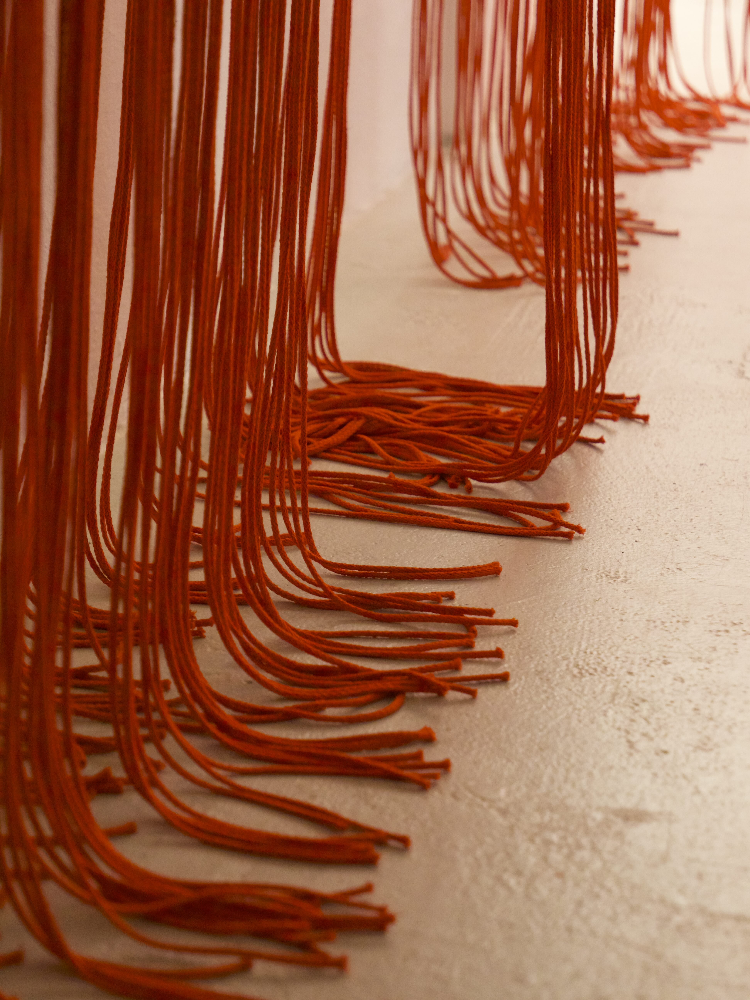
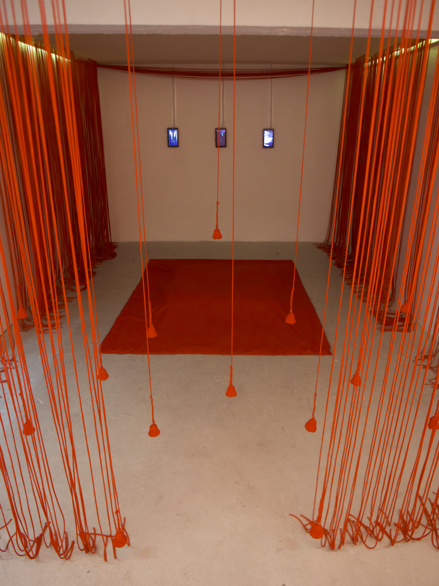
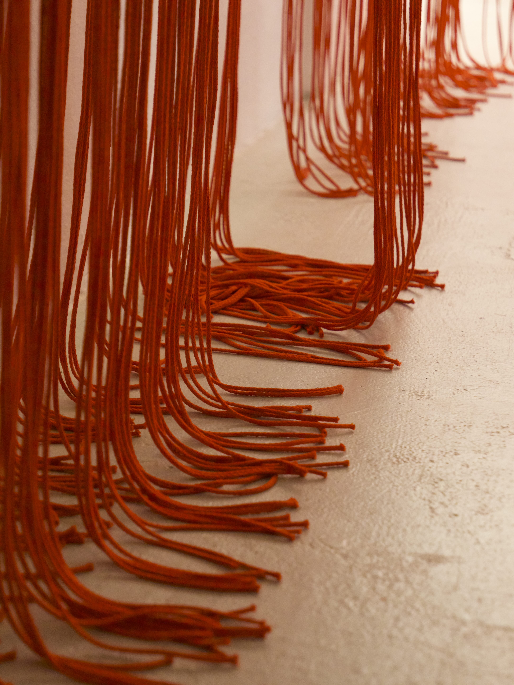
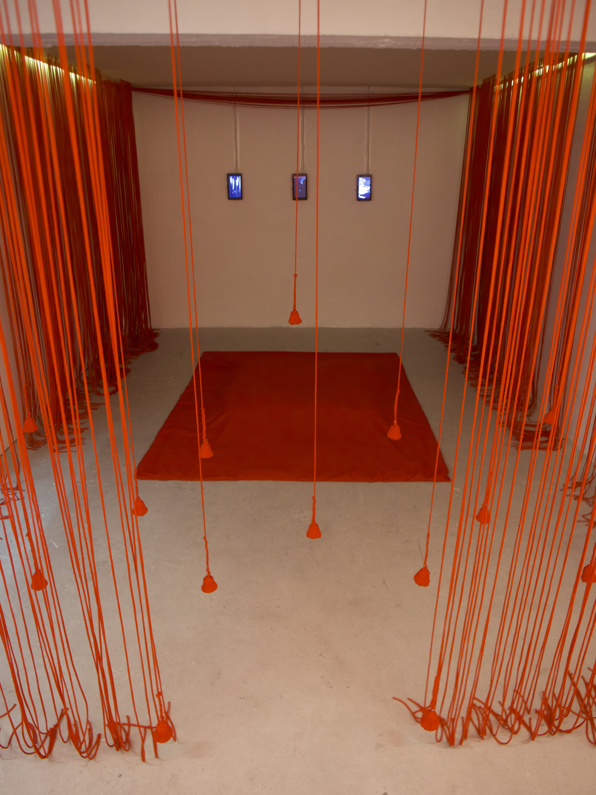
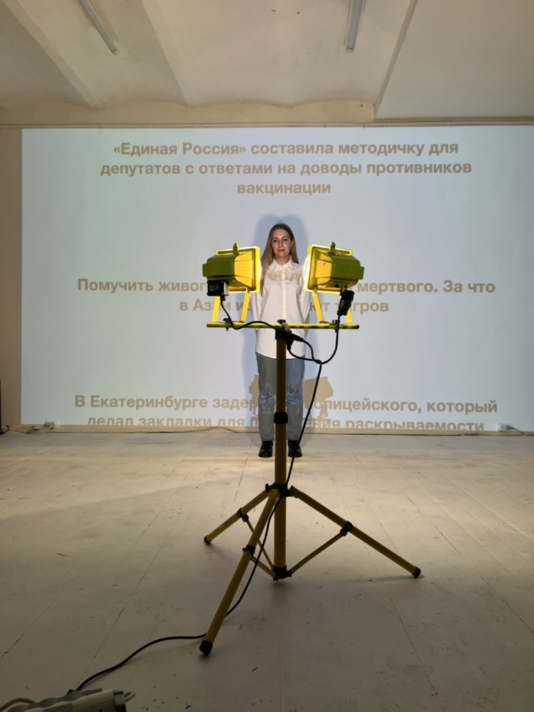
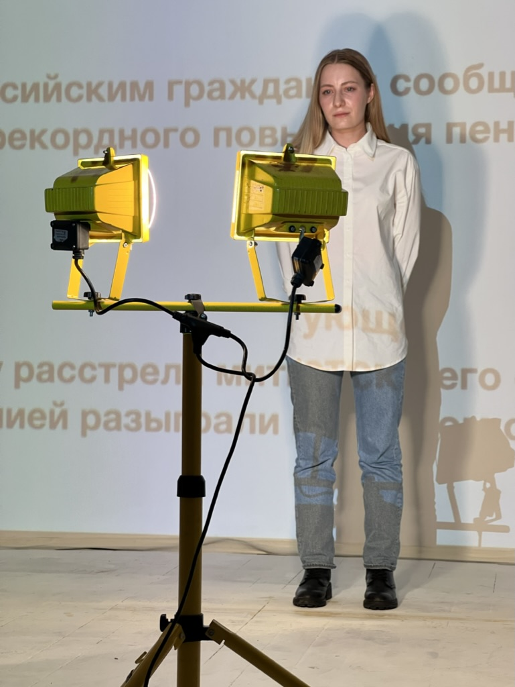
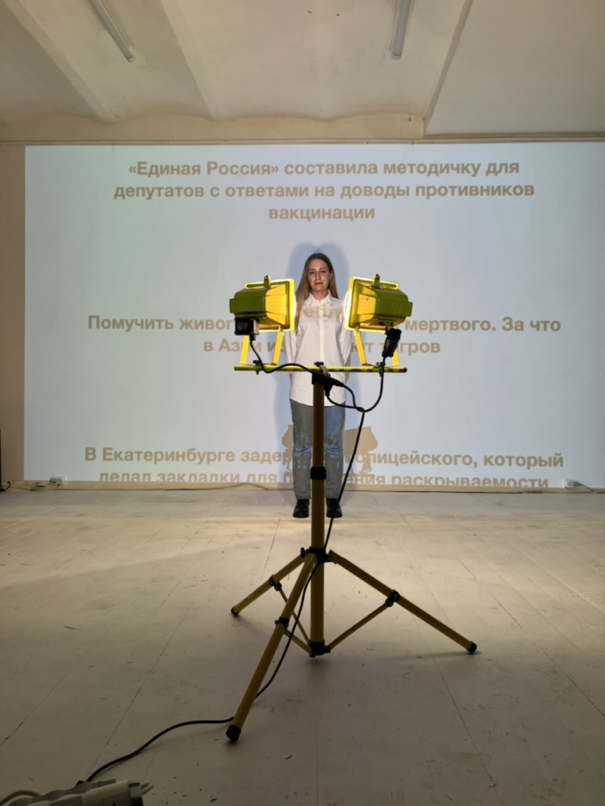
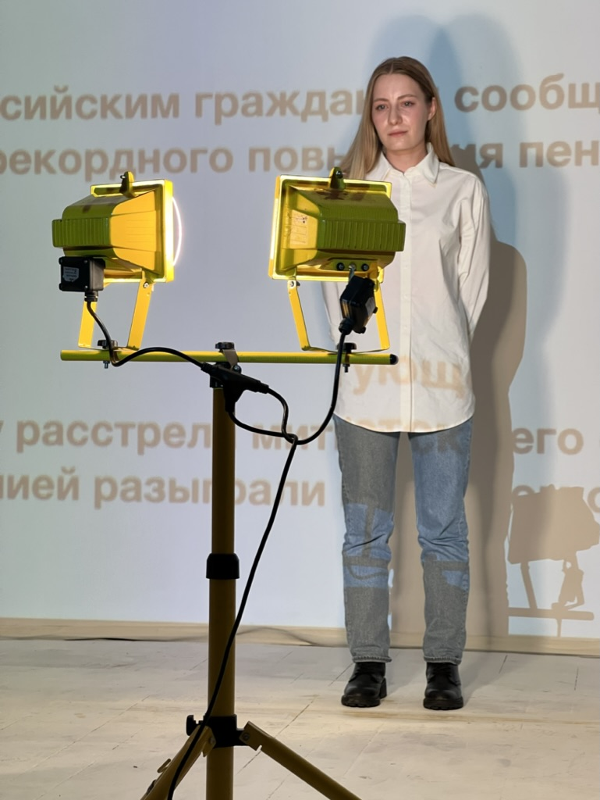

Active Listening
Are your devices listening to you? This is worrisome question remains in our minds, especially when after random conversations appear terribly targeted advertisements on our devices.
While the answer remains open, but there is no reason to believe that it does not. The response is based on investigations and articles by 404media (links below), and artist observations which confirm a high probability that our devices hear us.
This artwork links the colonial legacy of surveillance, where data and resources were extracted to dominate people, with modern methods of data production, where people are reduced to "buy-ready" profiles.
The work explores how seemingly convenient technologies like voice assistants perpetuate reinforce systems, and asks: How can people regain their right to control in a world dominated by data extraction and transformation into a commodity?
The installation includes 2 connected pieces which place separately:
First: This piece, featuring a PC, screen and microphone, invites visitors to share personal speech, seemingly to "train an AI digital body." The screen displays a playful log of the generation process. It includes a neon sign reading “Train me” (100 × 25 cm).
Second: Uses speech from the First piece as a prompt to create AI-generated advertisements, displayed either on a screen or printed in real time.
Tech: Locally trained StableDiffusion 1.5 AI model, ControlNet and Whisper Libraries. TouchDesigner. Everything is processing and stored locally, no access to the internet. The entire process takes 30 seconds: from speech input to printed ad.
Links 404media: 1, 2, and 3 Pitch deck by CMG.
Graduation project MFA Media art, design and technology program, Frank Mohr Institute, Groningen.
Exhibited at NP3 Gallery and Niemeijer, Groningen.
Reimagine algorithmic structures
"Yo, first I want to thank the great algorithm that pull us all here." – Donald Glover, Emmys acceptance speech, 2017.
Because algorithms impact not only individuals but also collectives seeing us as datasets and forming subjects, collectives, and even erasing our agency, the artist invites participants to explore these dynamics through a hands-on, collaborative approach. By making and experimenting together, we explore how algorithms emerge, how they function, and how they might be reclaimed for the public good rather than serving the interests of big tech companies. The main goal is to collectively find new creative ways to communicate, resist, and collaborate with algorithms.
The artist believes that together we can redirect algorithmic structures to serve us, fundamentally transform the data extraction process, and reimagine our role in digital systems — not as passive sources of data, but as active agents of meaning. Through speculative play, embodied exercises, and critical dialogue, this workshop opens a space where we can rehearse futures in which algorithms are shaped by collective values, care, and creativity.
Duration of lecture – 30 min, hands-on part – 1 hour, discussions – 1 hour.
Photos from first workshop in Frank Mohr Institute, Groningen.
Held twice.
Digital wisdom manual
This is part of Digital manual of World for Us which explore dilemmas and actions related to human interaction with the digital world, emphasising practical and speculative considerations.
And at the same time ia asking questions: How could we deal with amount of data which we produced? What is the digital world, whose digital body we have created and in which we live? Do we ready to delete our data before death and how we can do it? And etc.
The final digital manual includes scores for deleting and manipulating data before and after death. Visuals with results of research (images, photo/video of performances, data noise, data decomposing, etc.). Audience will feel the failure and unwillingness to cope with the amount of data they have created over their life. This reflects not a deliberate refusal but an inherent limitation of our condition, where reliance on digital automation takes over human agency. But at the same time audience will feel hope and power of Digital Wisdom.
Tech: Blender. Sound: machine noise.
Screenshot from video projection. Project is ongoing.
Guān Luò Yīn
 



Guān Luò Yīn is a ritual in Taoist belief where it is believed that, under the guidance of a Taoist priest, the soul of a living person can transition to another world to visit the deceased, make up for regrets, or reflect on their career, fate, and health.
Inspired by this, we use the art space as a medium to create an interactive installation that combines audio and videos, with red strings and cloth. Through sound and immersive sensory experiences, we aim to depict the transition process from the physical world to the spiritual or afterlife world, inviting the audience to reflect on the emotional solace that religious and spiritual rituals provide.
This work includes both sound and visual installations. The sound installation consists of red strings hanging around the space, combined with infrasound.
The visual installation is made up of three small screens, each playing a slow-motion video related to rituals. These videos respectively represent the afterlife, money and career, and the body and health.
Tech: Touchdesigner, MaxMsp, Ableton, sensors Piezo, RPI 4.
Material: treads, canvas, bells, 3 screens, fabric.
Size of the room 400 x 150 x 170 cm
Collaboration with Yu Shi Wei, funded by SIGN Gallery Groningen for Sound music festival 2024.
Exhibited at SIGN Gallery, Groningen.
D.ecosystem
In this work, the artist turns to the digital world, which is created by people, but also has its own life, invisible and uncontrollable. In an attempt to comprehend the nature of the digital world, you will find yourself in a digital ecosystem intertwined with three levels of its development
There is an anonymous, faceless World inside, indifferent to us as human beings, despite all our efforts to change, shape, improve and even save this world. This indifference arises from the lack of digital wisdom in our lives and we are left alone with emptiness and disappointment.
World for us not only implies a human-centred way of being, but also points to a vague realm of non-human, which is not for us. We can generalise this to say that we are unable to control or predict any digital or natural disaster.
World without us is sublime and inaccessible, with dark magnetic liquid living on its own terms. Anticipation of the threat from the rapid development of technology is already wrong. With every passing minute, we go too far, but do not reach this world and return to the World for us. Interaction with the digital ecosystem is impossible, but influence and change are always possible in both directions.
Tech: Arduino + electromagnet + ferromagnet liquid, audio amplifier.
Size of the installation: 200 x 45 x 145 cm
Sound by Alexander Shlyakhov.
Exhibited at De Proef, Frederiksoord.
Archive of ourselves
The digital footprints we leave every day lose their identity becoming an anonymous client ID with a set of our characteristics and preferences. Our data is no longer ours, although we should be able to own, use and dispose of it. The personality as a unique subject is no longer important for companies which collect our data.
In this work the artist explores the idea of data depersonalization and protection. The encounter of a depersonalised AI with personal memories and experiences transforms them into a visually different video with lost subjectivity. Loss of subjectivity of the archive allows it to protect personal data and doesn’t allow the original to be returned.
In three videos the visual component changes depending on the depth of penetration of AI as a tool. It is also presented with the original video archive which has been modified.
Tech: Touchdesigner, AI - StreamDiffusion, 6 old TVs
Exhibited at FMI, Groningen for Encounters in Artistic Research and ELSA LAB Network event
MADxNAIP
The first part being a series of 4 Live Lab sessions exploring core concepts behind our collaboration and the art of co-making in an ‘open space’ domain. The second part is a 4-Day residency on location at the Grand Theatre, Groningen, working in a variety of their spaces physically and virtually. This season's residency explores further into the creative artistic realm between the digital and physical domains. Collaborating with NAIP students and faculty from the Icelandic Academy of the arts. The collective explore themes of the sensuous and the imperfect.
The module focuses on sharing the process of art making with artists of different disciplines in order to look at this creative process from many different perspectives. We think outside of the box, we share our ideas, we learn together, we inspire one another and form an artist collective and network. The module is hosted in The Grand Theatre, Groningen, and culminates on the final day of the residency in a sharing of work created in the Grote Zaal. Throughout the journey we will explore the fusion of 4 pillars of making: sonic, visual, technological and performative.
Chaos of dreams
This work involves finding order in a magical world collected in pieces. Dreams particles are scattered unpredictably everywhere. They interact with light and sound, creating chaos that seems uncontrollable and destabilising.
However, it has a "will" as the main driving force - the deep conviction that nothing happens unless somebody or some being wills it to happen. Everything important is happening inside. There are no accidents in the our world.
The installation is interactive: turn on the flashlight and explore the coloured shadows of the installation, you can shine it inside and hear a mysterious voice.
Tech: Arduino, Max Msp, motor.
Material: fabric, metal sculpture 50 x 15 x 15 cm, plastic sheets, paper.
Made with Letizia Roccaro as part of hackathon for Sound music festival 2023, Groningen. Exhibited at Sign Gallery.
Voices in the room
This work shows that there is no difference between a living person and a heartless mechanism when we thoughtlessly do things with data. Repetition, mechanicality and aimlessness arise when we thoughtlessly scroll, photograph the same thing, taking a reflex phone out of pocket, stop looking, to be conscious and to notice. The human ceases to differ from the mechanism, from the media image. Media image - a digital body, becomes for a moment more interesting than the living machine itself.
The installation is interactive: As you scroll through the tablet screen, you come across the once recorded messages, the sound of which turns into an image on the screen. These scattering dots remind us of the endless flow of monotonous information that we create every day.
Messages:
"Consume without asking questions."
"We produce seven hundred twenty thousand hours of YouTube videos daily, we can't consume that much."
"The search for cheap dopamine."
"Happiness for everyone, free of charge, and let no one be left out."
"Nothing has changed."
"To feel inner void in the information space."
"I want to learn how to cultivate my own ideas and thoughts."
Tech: MaxMsp, tablet, screen.
Bye World
By getting information reproduction tools, we create and leave a huge digital footprints, absolutely justifying the status of Homo Sapiens Digital. In most cases, without thinking about what happens to that data set after the owner dies.
The concept of Homo Sapiens Digital is, among other things, about the development of digital wisdom, which will be «digital purity»: do not leave behind useless information globally, loading the servers and networks with continuously published content from our lives.
The project suggests turning to digital wisdom and digital purity during life and the process of decomposing the digital personality profile after death.
Tech: Blender, Ableton.
Size of whole projections: 200 x 200 cm
Collaboration with Alexander Shlyakhov.
Graduation project from the New Media in Contemporary Art program Moscow School of Contemporary Art.
Exhibited at 30/7 Gallery and Zaryadye, Moscow.
Don’t look at the light
 



In this work the artist put light and information on one step. They are everywhere and they may be impossible to perceive, killing and destroying.
We get used to looking at the bright light, although initially it seems impossible to look at it. Long eyes absorb clarity of vision, causing nausea and dizziness.
We’re going blind and numb. We get used to looking at the injustice of life, the distortion of information, the propaganda, even though it seems impossible at first to look at, which is outrageous. We’re going blind and numb. The seeming impossibility of looking is replaced by addiction.
The habit takes away the strength from the struggle. What happens becomes natural and no longer causes the blinded pain.
Duration 5 min.
Project from the New Media in Contemporary Art program, Moscow School of Contemporary Art.